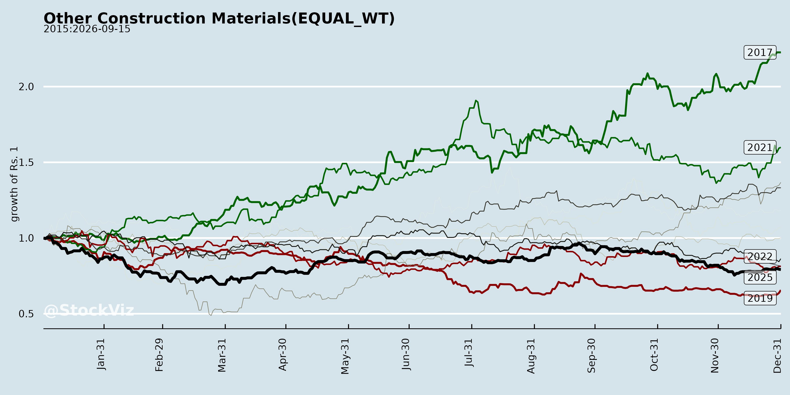
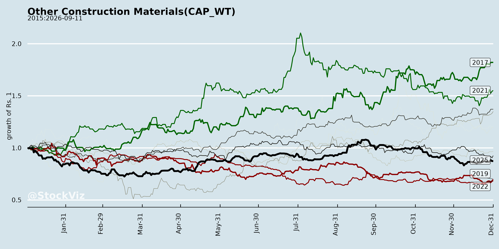
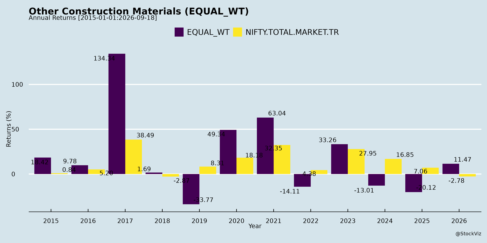
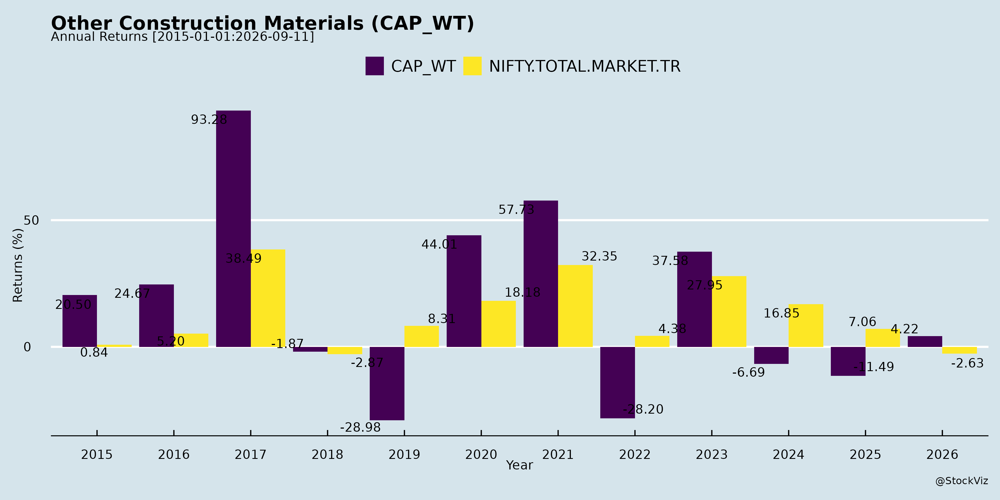
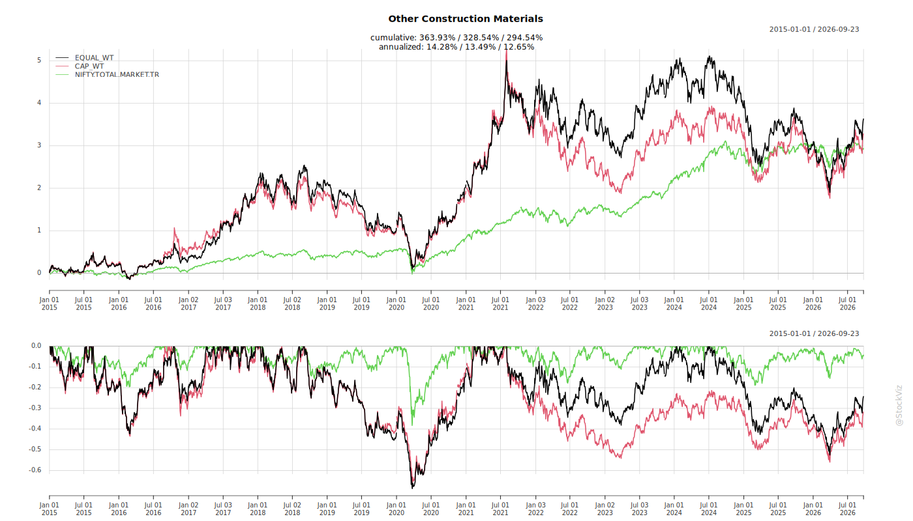
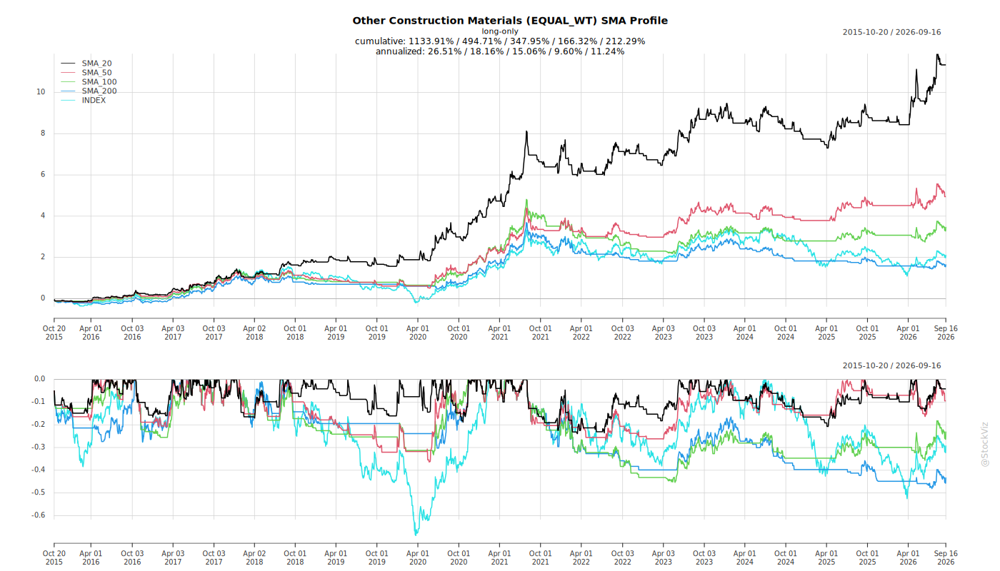
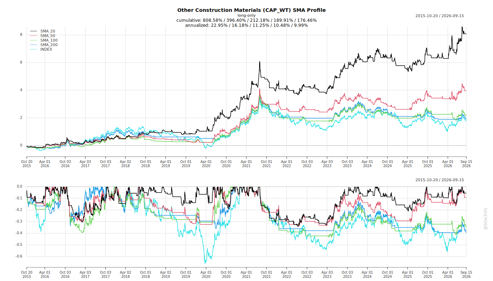
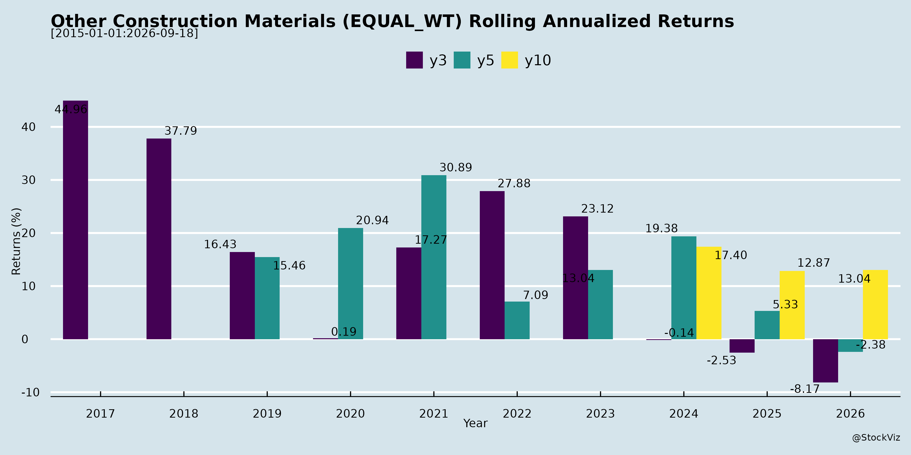
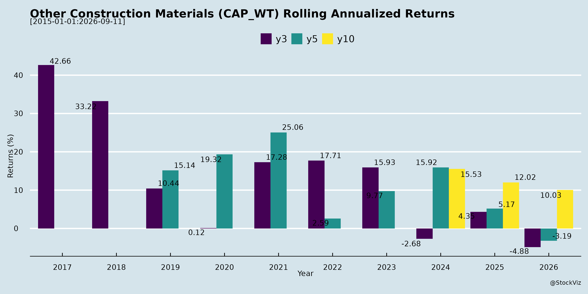

asof: 2026-04-16
The construction materials and allied industries in India have undergone a significant transformation, transitioning from a period marked by severe macroeconomic friction and fragmented, manual supply chains into an era defined by technological integration, high-margin product innovation, and structured business models.
Here is a detailed breakdown of how these challenges and opportunities have evolved over time:
The Evolution of Challenges
1. Macroeconomic and Geopolitical Headwinds Over the past few years, the sector has had to navigate a highly volatile environment triggered by geopolitical instability that affected global trade and commodity flows [1, 2]. Manufacturers faced elevated input costs, particularly for imported raw materials like asbestos fiber [2]. This situation was further compounded by severe supply chain disruptions, increased global freight charges, and the depreciation of the Indian Rupee, all of which heavily amplified import-related expenses [2]. Furthermore, unpredictable dollar-rupee exchange rates remain an ongoing challenge for steady business forecasting [3].
2. Demand Volatility and Pricing Pressures Companies have struggled with a limited ability to pass on rising cost increases to end consumers, specifically in the highly price-sensitive rural housing segment [2]. This inability to adjust pricing exerted heavy pressure on manufacturing costs and suppressed operating margins across the sector [2, 4]. Additionally, unpredictable weather patterns, such as the early onset of monsoons, have historically subdued the demand for roofing products [5].
3. Extreme Market Fragmentation and Inefficiency Historically, the Indian construction materials market has been crippled by a completely unorganized structure. With over a million fragmented vendors, the industry suffered from a total absence of technology, lack of price transparency, and heavy reliance on manual paper trails [6-8]. This opaque system led to constant renegotiations from scratch, widespread inaccuracies in deliveries and billing, and margins that vanished at every handoff [7, 9].
4. Broken Working Capital Cycles and Execution Gaps The industry has long been plagued by a broken working capital ecosystem where contractors are forced to pay for materials upfront while developers pay late [7]. This cash flow mismatch has routinely destroyed otherwise healthy businesses and caused real estate projects to stall due to a lack of capable operating partners [7, 8].
5. Regulatory and Expansion Hurdles On the operational side, companies have frequently faced delays in land acquisition for capacity expansion projects, which pushes back expected revenue additions [10, 11]. From a regulatory standpoint, the Government of India’s recent notification of the new Labour Codes (such as the Code on Social Security, 2020) has forced companies across the sector to reassess their employee benefit obligations, resulting in sudden, multi-million rupee exceptional financial charges to cover increased gratuity and social benefits [12, 13].
The Evolution of Opportunities
1. Market Stabilization and Rural Recovery The current landscape presents a clear path to recovery driven by normalizing monsoons, the stabilization of global supply chains, and the diversification of sourcing bases [14]. Manufacturers are seeing improved price realizations and a sustained, recovering demand for traditional asbestos-based roofing sheets, fueled heavily by the rural housing market and national infrastructure pipelines [14, 15].
2. Strategic Pivot to Value-Added and Non-Asbestos Products To combat pricing pressures, there is a massive industry shift toward Value-Added Products (VAPs) and non-asbestos solutions [16]. Non-asbestos cement boards—marketed as highly durable, fireproof, and waterproof futuristic products—are expected to take a major leap in the market, with industry leaders anticipating the sector to double in size over the next 3 to 4 years [17, 18]. To capitalize on this, companies are actively undertaking capacity expansions in previously unrepresented geographical markets like Orissa and Madhya Pradesh [18-20].
3. Technological Disruption and Digital Procurement The historic lack of organization has created a massive opportunity for digital procurement platforms [7]. Tech-enabled operating layers are revolutionizing the space by aggregating supply and digitizing the entire procurement workflow [21, 22]. Through AI-driven tools, companies can now facilitate live requests for quotations (RFQs), automate document verification with 95% accuracy, and utilize real-time credit risk monitoring [9, 23, 24]. These advancements have drastically cut inefficiencies, reducing vendor onboarding times from 5 days to just 10 minutes and practically eliminating invoice disputes [24].
4. Asset-Light and High-Margin Service Models Opportunities have expanded far beyond traditional manufacturing through innovative, scalable business models: * Contract Manufacturing: Companies are securing 100% of the production output from partner factories under exclusive long-term agreements. This asset-light model allows businesses to scale rapidly without heavy capital expenditures, driving up partner plant utilization from 20% to over 70% while protecting their own return on capital [25-28]. * Developer-as-a-Service (DaaS): Firms are now stepping in to solve the industry’s execution gap by managing the entire lifecycle of stressed or stalled real estate projects—from funding and material procurement to final sales. This model requires zero incremental capital and yields exceptional EBITDA margins of 55% to 60% [29, 30].
5. Long-Term Institutional Commitments Finally, the industry is breaking away from its reliance on volatile, day-to-day spot transactions. There is a growing trend of forging long-term, formally structured procurement agreements [31]. By locking in massive, multi-year supply contracts onto digital platforms (such as an INR 800 Crore procurement commitment over five years), the industry is establishing unprecedented demand visibility, pricing stability, and mutual growth for both manufacturers and contractors [32-34].
asof: 2026-04-16
Pinpointing Project Failures
I’m now zeroing in on project execution gaps in real estate, such as the frequent lack of capable operating partners, leading to stalled projects and trapped capital. The lack of pricing transparency, coupled with reliance on local vendors ([41]), adds to challenges. Working capital shortages, sales dependence, and lender disputes further exacerbate issues for developers ([56], [57]). Additionally, bankrupt developers and opaque supply chains ([58], [103]) contribute to project failures, revealing fundamental structural inefficiencies.
asof: 2026-04-16
The construction and building materials industry in India is characterized by massive scale, rapid government-backed expansion, and deep-rooted operational inefficiencies. Understanding this industry requires looking at its macro-economic drivers, its fragmented supply chain, the technological and financial challenges it faces, and the specific dynamics of the roofing materials sub-sector.
Massive Market Size and Strategic Growth Drivers The Indian construction materials market is a colossal INR 50 lakh Crore industry [1]. The sector’s expansion is heavily fueled by significant government initiatives and structural reforms: * Infrastructure and Housing Investments: The government’s National Infra Pipeline includes over 13,100 projects, backed by an enormous infrastructure capex budget of INR 11.11 Lakh Crore [2, 3]. Additionally, the ‘Housing for All’ initiative under PMAY (Urban) has a capex budget of INR 1.59 Lakh Crore, which is driving substantial residential construction demand [3]. * Urbanization and Real Estate: The real estate sector currently contributes approximately 13% to India’s GDP, and with India’s urban share projected to reach about 50% by 2047, urban infrastructure funds are accelerating growth in Tier 2 and Tier 3 cities [3]. Road construction is also progressing rapidly at approximately 29 kilometers per day [3]. * Regulatory Reforms: The implementation of RERA has mandated project disclosures and strict completion timelines, while GST has simplified taxation and helped formalize the business ecosystem [3].
A Highly Fragmented and Unorganized Supply Chain Despite its size, the supply ecosystem is deeply fragmented, featuring over 1 million disparate vendors [1]. This fragmentation creates a large platform opportunity for digitization, as different material segments vary wildly in their level of organization [4, 5]: * Aggregates (Sand, Gravel, Crushed Stone): This is the most fragmented segment, with over 12,000 quarry operators and more than 80% of the market remaining unorganized [4, 5]. * Walling Solutions (Bricks, AAC blocks): Producing roughly 250 billion bricks annually, this segment is approximately 87% unorganized [4, 5]. * Ready Mix Concrete (RMC): With over 4,350 plants across India, the RMC market is still heavily unorganized, sitting at about 55-60% [4, 5]. * Heavy Materials: In contrast, the Cement (~700 MTPA installed capacity) and Steel (~150+ MTPA production) segments are highly organized, at 85-90% and 60-65% respectively [4, 5].
Operational Inefficiencies and the “Execution Gap” The traditional operating model of the construction materials industry is plagued by critical bottlenecks that destroy margins and delay timelines: * Broken Working Capital: There is a severe mismatch in cash flow. Contractors are typically required to pay upfront for materials, while developers pay them late [1]. This gap between cash-out and cash-in can destroy otherwise healthy businesses [1]. * Lack of Price Transparency and Trust: Historically, procurement has been a site-by-site, day-by-day exercise based on spot transactions [6]. There is no single source for materials, meaning every project must renegotiate from scratch, and buyers suffer from a lack of forward commitments or supply guarantees [1, 6, 7]. * Zero Technology Layer: Digital adoption in the construction materials market is still in its very early stages [3]. The industry relies heavily on paper trails and manual reconciliation, meaning real-time visibility is non-existent, every delivery is a manual event, and every invoice carries the potential for a dispute [1]. * Real Estate Execution Gap: Landowners, developers, and investment funds often lack capable operating partners, leading to stalled projects, slipped timelines, and trapped capital [1].
Specific Challenges and Trends in the Roofing Sector Within the specialized asbestos-based roofing and building boards segment, the industry is navigating a complex and evolving landscape [8]. * Input Cost and Supply Chain Pressures: Companies face elevated input costs, particularly for imported asbestos fiber [8]. This is exacerbated by geopolitical instability affecting global trade, supply chain disruptions, increased freight charges, and the depreciation of the Indian Rupee, all of which amplify import-related expenses [8, 9]. * Price Sensitivity: Manufacturers face a limited ability to pass these increased costs on to end consumers, particularly because the primary market for these sheets is the highly price-sensitive rural housing segment [9]. This dynamic exerts immense pressure on operating margins and causes heightened price volatility [9]. * Path to Recovery and Future Shifts: Despite these headwinds, the sector relies on catalysts like good monsoons, the stabilization of global supply chains, and sustained rural infrastructure demand to drive recovery [10]. Looking forward, the industry is gradually transitioning toward non-asbestos building boards—which are fireproof, waterproof, and sustainable—as a major future growth product [11, 12].
asof: 2026-04-16
Massive government-led infrastructure expansion is a primary catalyst for the construction materials industry. The government’s financial commitment is reflected in an immense INR 11.11 Lakh Crore Infrastructure Capex Budget [1]. Furthermore, the National Infra Pipeline currently encompasses over 13,100 active projects, providing a massive and sustained runway of demand for raw materials and executing contractors [2]. On the execution front, road construction has reached an impressive pace of approximately 29 kilometers per day as of 2024, and the establishment of the Urban Infrastructure Fund is actively accelerating the growth and modernization of Tier 2 and Tier 3 cities [2].
The real estate sector acts as a massive economic engine for this industry, currently contributing approximately 13% to India’s overall GDP [2]. This is supported by a robust Real Estate Investment Trust (REIT) market boasting around INR 1.5 Lakh Crore in Assets Under Management (AUM) [2]. The demographic shift towards urbanization is a highly favorable long-term tailwind, with the urban population share expected to hit 50% by the year 2047 [2]. To support this rapid urbanization, the government’s ‘Housing for All’ initiative under the Pradhan Mantri Awas Yojana (PMAY) is directly driving residential construction demand, bolstered by a dedicated INR 1.59 Lakh Crore Capex Budget for PMAY (Urban) [2]. In rural areas, there also continues to be sustained demand for materials like asbestos-based roofing sheets, driven by rural housing needs and localized infrastructure projects, which is further aided by positive seasonal factors such as a good monsoon [3].
Structural reforms have significantly improved the operating environment for construction, real estate, and material supply. The implementation of the Real Estate (Regulation and Development) Act (RERA) has fundamentally changed developer behavior by mandating strict project disclosures and stringent completion timelines [2]. This regulatory pressure ensures that construction projects must be completed on schedule rather than stalled, leading to steady, predictable demand for building materials. Additionally, the introduction of the Goods and Services Tax (GST) has vastly simplified the taxation landscape and is actively formalizing the traditionally unorganized business ecosystem [2].
The sheer fragmentation of the Indian construction materials market—which includes over 12,000 quarry operators, thousands of ready-mix concrete plants, and a highly unorganized brick and walling sector—presents a unique tailwind for tech-enabled B2B aggregators [4, 5]. Because digital adoption in the construction materials market is still in its very early stages, there is a massive, open opportunity to introduce modern technology layers [2]. Platforms are stepping in to provide price transparency, resolve broken working capital cycles, and digitally organize heavily fragmented supply chains [2, 4, 6].
Finally, after navigating periods of geopolitical instability and raw material volatility, companies in the sector are seeing a clearer path to recovery due to stabilizing global supply chains and the strategic diversification of their sourcing bases [3]. Furthermore, manufacturers are benefiting from improved price realizations, systematic cost optimization measures, and favorable pricing adjustments, which are helping to ease previous margin pressures and support healthier financial performance across the sector [3, 7].
asof: 2026-04-16
The Indian construction materials market presents a highly robust and expansive growth outlook, projected to scale significantly from $255 billion in 2024 to $335 billion by 2029 [1]. This massive INR 50 lakh Crore industry is currently ripe for technological transformation and consolidation [2]. At present, large portions of the supply chain remain heavily unorganized, including over 80% of the aggregates sector (sand, gravel, crushed stone) and approximately 87% of the walling solutions sector [3]. This deep fragmentation—characterized by a lack of technological integration, broken working capital cycles, and execution gaps—creates a massive opportunity for digital procurement platforms to organize the market and improve efficiency [2, 3].
The sustained growth in this broader construction materials sector is heavily fueled by several strong macroeconomic and regulatory drivers: * Government-Led Infrastructure Expansion: Massive initiatives like the National Infra Pipeline, which currently boasts over 13,100 projects, are driving long-term material demand [4]. * Housing and Urbanization: The ‘Housing for All’ initiative under PMAY (Pradhan Mantri Awas Yojana) and the Urban Infrastructure Fund are accelerating construction in residential sectors, particularly accelerating growth in Tier 2 and Tier 3 cities [4]. * Regulatory Reforms: The implementation of RERA, which mandates strict project disclosures and completion timelines, alongside GST, is successfully simplifying taxation and formalizing the broader business ecosystem [4].
Within the specific segment of roofing and building solutions, the outlook is cautiously optimistic with a clear path to recovery, despite navigating recent macroeconomic headwinds. Over the past few years, the asbestos-based roofing sector has faced a complex landscape impacted by geopolitical instability, supply chain disruptions, depreciating Indian rupees, and elevated input costs, particularly for imported asbestos fibers [5, 6]. These factors previously exerted significant pressure on operating margins, largely due to the industry’s limited ability to pass cost increases onto price-sensitive rural consumers [6].
However, the outlook for FY’26 and beyond demonstrates strong signs of recovery, stabilization, and strategic evolution. This positive trajectory is supported by: * Stabilizing Supply Chains and Costs: The industry is actively benefiting from the stabilization of global supply chains, the diversification of raw material sourcing bases, and improved price realizations [7]. * Demand Resurgence: There is sustained, recovering demand for roofing sheets, particularly driven by rural housing and infrastructure projects, which is further aided by favorable monsoon seasons [7]. This resurgence is already reflecting in improving capacity utilization and sharp YoY increases in profitability across the sector [8]. * Shift Towards Non-Asbestos Future Products: The industry is strategically pivoting toward the non-asbestos business, which includes modern fireproof and waterproof building products [9]. This segment is widely viewed as the future of the market, with management expectations forecasting that non-asbestos product volumes could double over the next 3 to 4 years [9].
Overall, while companies are continuing to closely monitor geopolitical situations and currency fluctuations that could impact imported raw materials [10, 11], the industry’s general forecast anticipates steady margin recoveries. This will be aided by ongoing cost optimizations, better pricing adjustments, and a strategic focus on expanding value-added, sustainable product portfolios [12, 13].
Copyright © 2023 SAS Data Analytics Pvt. Ltd. All rights reserved.